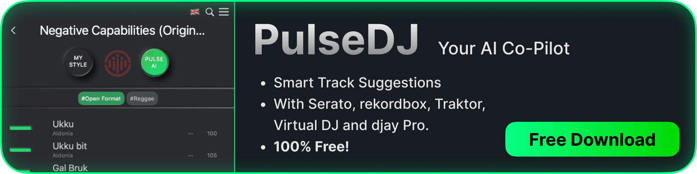
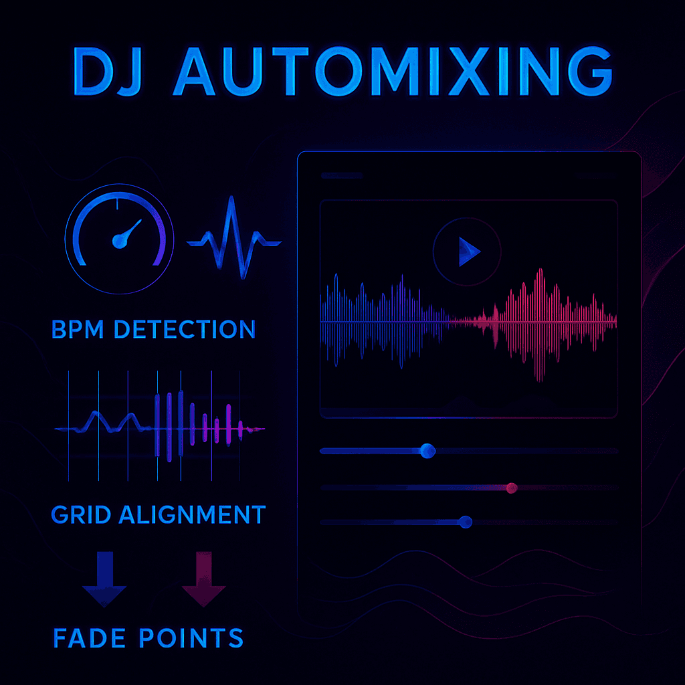
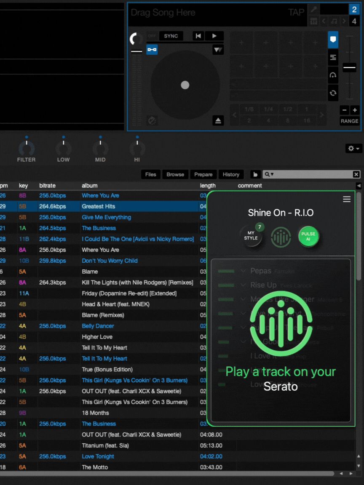

Whether you are planning a high-energy Halloween set in October or curating a sophisticated dinner playlist, understanding the mechanics of automated mixing is essential for modern DJs who want to leverage technology without losing their creative soul.
Recomended Articles:
- How to Beatmatch for DJs
- Harmonic Mixing for DJs
- How to Make a DJ Mix
What You’ll Learn About Automix for DJs
- The definition and mechanics of the automix feature in modern DJ software.
- How to use automation to create seamless background music for events.
- The pros and cons of letting the software control the crossfader and volume.
- How PulseDJ acts as an intelligent co-pilot to suggest the perfect next track for your manual or automated sets.
PulseDJ: Your Smart Assistant for DJ Sets

How Does Automix Work?

To u nderstand how to use this effectively, you have to look at what is happening under the hood. When you create an automix playlist, the software analyzes the files for specific data points:
- BPM Detection: It identifies the tempo to ensure the next track isn't too fast or slow compared to the current one.
- Grid Alignment: It lines up the beats so the drums of the incoming song hit at the same time as the outgoing one.
- Fade Points: Most software allows you to determine mix-in and mix-out points (cue points), so the transition happens during an intro or outro rather than over a vocal.
Many users find this feature incredibly easy to use. Thanks to advancements in technology, you can often set a transition length (e.g., 10 seconds) and let the software handle the volume curves.
The Role of Key and Energy for Automixing
A truly professional sounding mix isn't just about timing; it's about sound compatibility. Advanced automix algorithms, and smart DJs manually curating lists, look at the key of the songs. Mixing two tracks with clashing keys can sound dissonant and ruin the vibe for the audience.
This is where preparation in the studio becomes vital. If you are just throwing random songs into a folder, the automix might technically match the beats , but the musical journey might feel disjointed. You need to order your tracks logically to maintain the right flow.
When to Use Automix (and When Not To)
There is a time and place for everything. Using autoplay doesn't make you a "fake" DJ; it makes you a resourceful one.
The Pros:
- Background Music: Perfect for the first hour of a wedding or corporate event where you need to carry a vibe but aren't the center of attention.
- Breaks: If you need to step away from the decks for a bathroom break or to handle a client request.
- Backup: If you have a technical issue with your main setup, having an automix running on a backup laptop can save the night.
The Cons:
- Lack of Soul: An algorithm cannot read the crowd. It doesn't know that the bride just walked in or that the energy on the dancefloor just spiked.
- Mistakes happen: If a file has incorrect beat-grid metadata, the transition will sound like a train wreck.
- Repetition: Without human intervention to select surprise tracks, the set can become predictable.
The Missing Link: Intelligent Curation
The biggest challenge with standard automix is the selection process. The software can mix Track A into Track B, but it doesn't know if Track B is actually a good song to play next.
In the past, you had to rely entirely on your memory or static playlists. But now, we have access to tools that can process millions of data points to help us choose the right direction. Whether you are playing files from your hard drive or streaming via services like Tidal, the question remains: What should I play next?
This is where the concept of a " Smart DJing Co-pilot " becomes a game-changer. Instead of letting the machine take the wheel entirely, you use AI to suggest tracks that match the current vibe, allowing you to find hidden gems in your library that you might have forgotten.
Comparison: Standard Automix DJ vs. AI-Assisted DJing Automix Mode
Feature
Standard Automix Mode
PulseDJ AI Co-Pilot
Primary Function
Automates the transition/crossfader.
Suggests the best next track creatively2.
Control
Software controls playback.
DJ retains full control of the mix3.
Track Selection
Linear (plays the next song in the list).
Dynamic (recommends based on history and vibe)4.
Key Matching
Basic sync.
Visual Green Highlights for harmonic compatibility5.
Data Source
Metadata tags.
Analysis of millions of parties and playlists6.
What is PulseDJ?

PulseDJ is an AI co-pilot for DJs that revolutionizes how you create your sets. Unlike a standard automix that blindly plays the next file, PulseDJ analyzes what you are currently playing in real-time and recommends creative next tracks to keep the floor moving.
It works by reading the history files of your existing DJ software - whether you use Serato, Rekordbox, VirtualDJ, or Traktor - without interfering with your audio or causing crashes. It is designed to be a companion that runs alongside your setup, offering added value through intelligent suggestions.
How PulseDJ helps you create perfect DJ mixes :
- Intelligent Suggestions: It looks at millions of real-world DJ sets to suggest tracks that statistically and musically work well together.
- Harmonic Mixing : It displays Key and BPM data, highlighting compatible tracks in green so you can mix seamlessly.
- Easy Workflow: When you see a recommendation you like, simply click it to copy the name, then paste it into your DJ software's search bar to load it instantly.
- Global Charts: You can access the PulseDJ HOT 100 to see what is trending across the world or in specific countries, ensuring your selection is always fresh.
Best of all, PulseDJ is completely free! Download PulseDJ for Mac or Windows.
Start Smart Mixing with PulseDJ
While the automix function is a handy tool for background music, the heart of DJing lies in track selection. Don't leave your most important decisions to a linear playlist.
PulseDJ gives you the best of both worlds: the intelligence of an algorithm with the control of a human DJ. By analyzing your library and providing real-time recommendations, it helps you craft sets that are professional, harmonic, and perfectly suited to your audience.
You can start using PulseDJ today for free. It’s time to stop guessing and start knowing exactly what track will blow the roof off.
Download PulseDJ Now
‹ What is Phrasing for DJs?